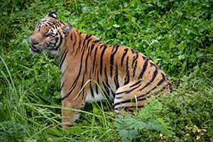
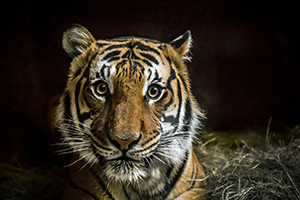
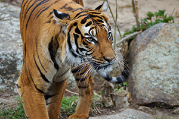
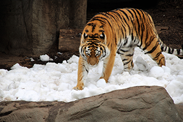
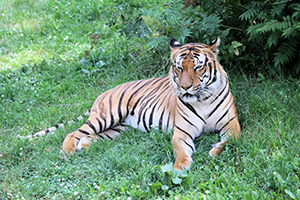

Jenis-Jenis Harimau Yang Masih Hidup
Ditulis Oleh Eldi Anugrah Pratama .Pada tanggal 2 November 2020
Menurut catatan sejarah, di dunia ini ada 9 subspesies Harimau. Namun 3 diantaranya sudah resmi punah. Harimau-harimau yang kini masih eksis tersebar di Bangladesh, Siberia, India, China, Iran, Afghanistan, dan Asia Tenggara. 6 Jenis Harimau yang Saat Ini Masih Hidup tersebut adalah :
1.Harimau Bengal (Phantera tigris tigris)
Harimau jenis ini disebut juga sebagai Harimau India. Daerah penyebaran harimau bengal antara lain India, Bhutan, Bangladesh, dan Nepal. Diperkirakan saat ini Populasi Harimau Bengal tidak lebih dari 2,500 ekor. Pada tahun 2011 dilaporkan jumlah harimau bengal dewasa di India sekitar 1.520-1.909, di Bangladesh 440 ekor, di Nepal 155 ekor, dan di Bhutan 75 ekor. Habitat Harimau Bengal adalah di padang rumput aluvial, hutan hujan tropis, hutan tropis, hutan lembab, hutan kering, dan hutan mangrov.
2.Harimau Indocina (Phantera Tigris Corbetti)
Harimau ini juga disebut dengan harimau corbet dan dapat ditemukan di wilayah Kamboja, China, Laos, Thailand, Burma, dan Vietnam. Harimau ini ukurannya lebih kecil dan lebih gelap dibandingkan dengan harimau bengal. Habitat harimau indonecinaadalah hutan di daerah gunung atau perbukitan. Diperkirakan populasi harimau indocina saat ini sekitar 350 ekor saja.
3.Harimau Malaya (Panthera Tigris Jacksoni)
Mereka hanya dapat ditemukan di daerah bagian selatan dari semenanjung Malaysia. Harimau Malaya merupakan ikon nasional negara Malaysia. Harimau jenis ini baru diakui sebagai salah satu subspesies harimau pada tahun 2004. Saat ini diperkirakan jumlah Harimau Malaya hanya sekitar 500 ekor.
4.Harimau Sumatera (Panthera Tigris Sumatrae)
Harimau jenis ini hanya bisa ditemukan di Pulau Sumatera. Harimau Sumatera merupakan jenis harimau yang berukuran paling kecil dari semua spesies harimau. Populasi Harimau Sumatera saat ini diperkirakan hanya ada sekitar 400-500 ekor. Mereka adalah salah satu spesies yang berstatus 'kritis'.
5.Harimau Siberia (Panthera Tigris Altaica)
Harimau ini juga dikenal dengan nama Harimau Amur karena mereka hidup di wilayah Amur-Ussuri jauh disebelah Timur Siberia.Mereka adalah jenis harimau terbesar dalam keluarganya. Pada tahun 2005 ada sekitar 331-393 ekor harimau Siberia dewasa dan remaja.
6.Harimau Cina Selatan (Panthera Tigris Amoyensis)
Mereka juga sering disebut dengan nama Amoy atau harimau Xiamen. Mereka adalah subspesies harimau yang paling terancam punah saat ini. Bahkan mereka juga pernah masuk dalam 10 binatang paling terancam punah di dunia. Diperkirakan saat ini hanya ada sekitar 59 ekor harimau Cina Selatan, dimana semuanya berada di Cina.
sumber:http://www.tarungnews.com/budaya/3478/6-jenis-harimau-yang-saat-ini-masih-hidup.html